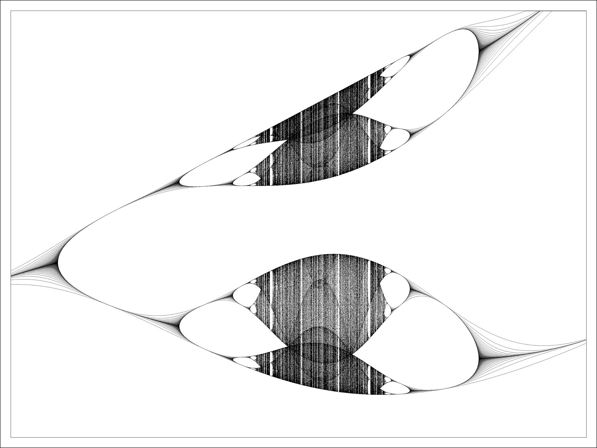

Gauss Map
The Gauss Map is generated with the following equation:
e
-
a
X
n
2
+
B

Gauss Map
Related Information
Wolfram Demonstrations Project - Bifurcation Diagram for the Gauss Map
Wikipedia - Gauss iterated map
arxiv - Composing α-Gauss and logistic maps: Gradual and sudden transitions to chaos